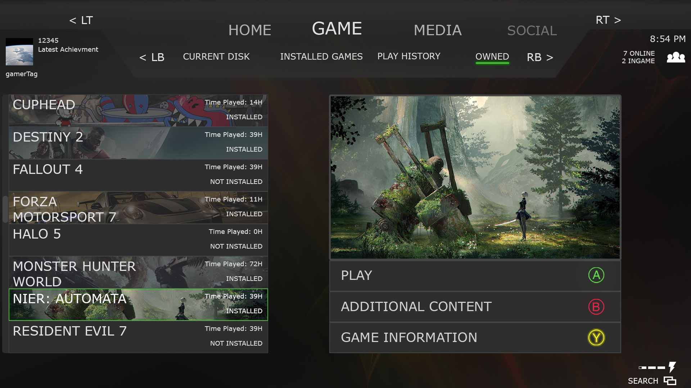
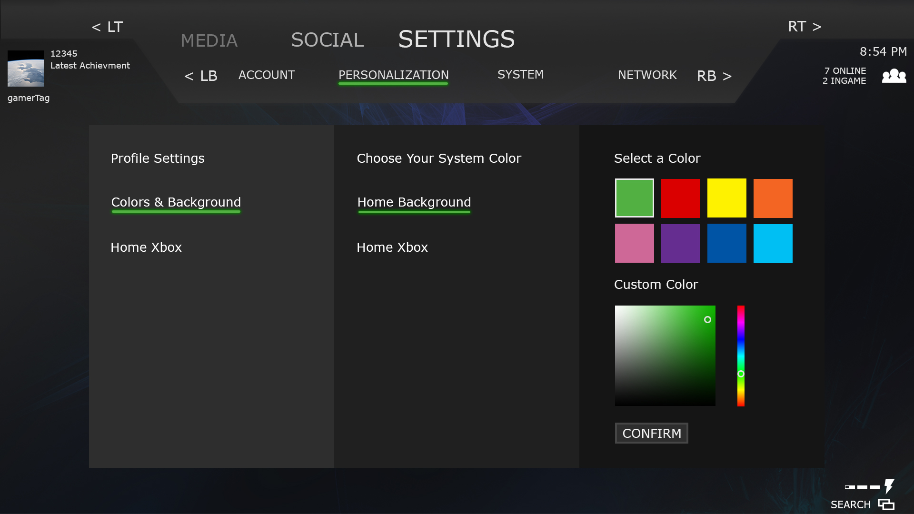

UI/UX Redesign
Technology Used:
Photoshop
Return to Portfolio
First, let's talk about the current UI before I get into the redesign.
Ever since the Xbox One was first released, I'd hear one complaint over and over from all kinds of sources. It's nothing to do with games or technical capabilities
or the ever controversial DRM functions. It was the interface. I figured it couldn't be THAT bad until I tried navigating the maze of an interface myself. The first issue
is nested menus inside more nested menus. Just to launch the Youtube app, we had to dig into a total of 3 menus. Three, just to launch the most popular video streaming
service available. That's about 2 too many if you ask me.
Next is less about visual appeal or finding a game or app, it's how you physically navigate. Inaccurately holding and/or repeatedly tapping the control stick
is unnatural. It not only puts a strain on the user's thumb, but it's also worse for those with disabilities.
The last major thing that needed to be addressed is the "identity crisis" that Microsoft gives all of their products. Ever since Win8, every Microsoft product including Win10,
phones and, the Xbox One have been designed to have similar interfaces. While the tiled icons work great for computers and phones where you have a free range of motion
and have immediate access to whatever is on screen, console is a completely different story as explained above. It's likely that Microsoft wanted to give their brand a
recognizable look, and that's not a bad thing. But you can't simply take an interface designed for mobile devices, and use it across so many different platforms. It just
won't translate as well across the board.
I wanted to first think of the core methods of navigation. What are people using these controllers accustomed to? What will feel the most natural? Most of the top games on consoles are shooters. With this information, it's safe to say that most players have a natural affinity to rapidly tapping these buttons. So I wanted to base any menu navigation that required more than a few button presses around the shoulder buttons and page scrolling. Also for players with hand disabilities, the shoulder buttons are easier to reach for those who don't have access to controller attachments. The "tab" like major and submenu help reduce the number of nested menus. With this there would be, at most, 2 nested menus. With the submenu in a clean listed format, there will no longer be the need to search through the mess of icons on screen. Simply scroll through the list.
Here we see how vertical menus would work. Having to enter a new screen to view these lists is clunky and can bring the user out of the interfaces flow so I tried to minimize load screens. The challenge here is trying to integrate the usability of the screen selection menus into the vertical menus which can hold hundreds of options. The obvious solution is to implement a way to scroll page by page.
You can try pretty hard to be innovative with things like options menus, but you can't escape the fact that there will be a lot of menus and even more options. The format above is what pretty much every console or game uses and it's used for a reason. I've seen all kinds of other cool menus including a wheel select and other kinetic based designs. They felt cool but who wants to stick around on a config screen any longer then necessary just to see an animation?